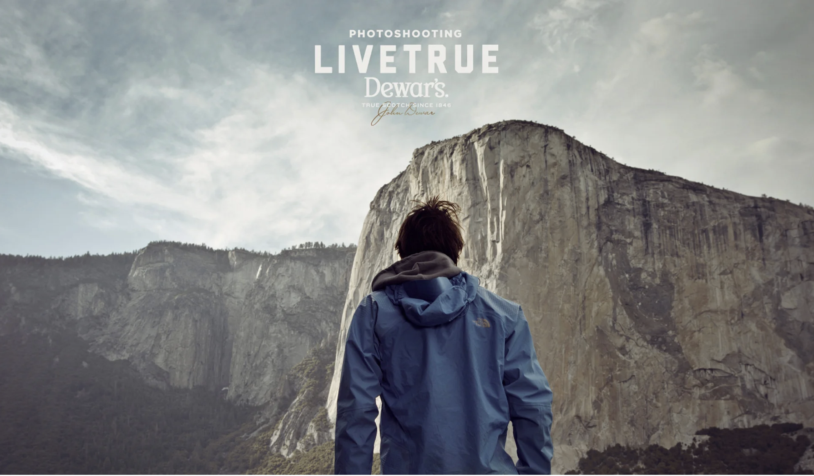
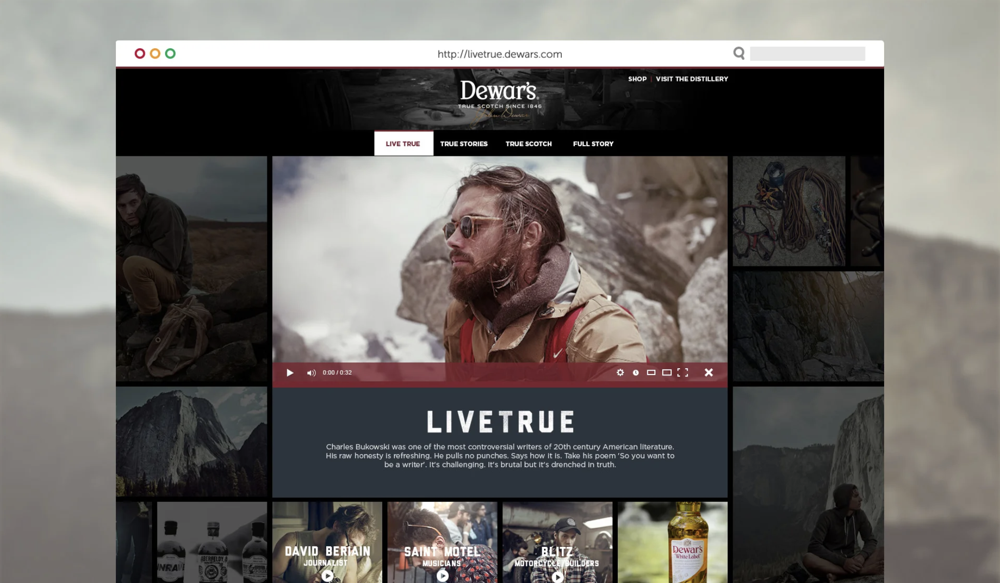
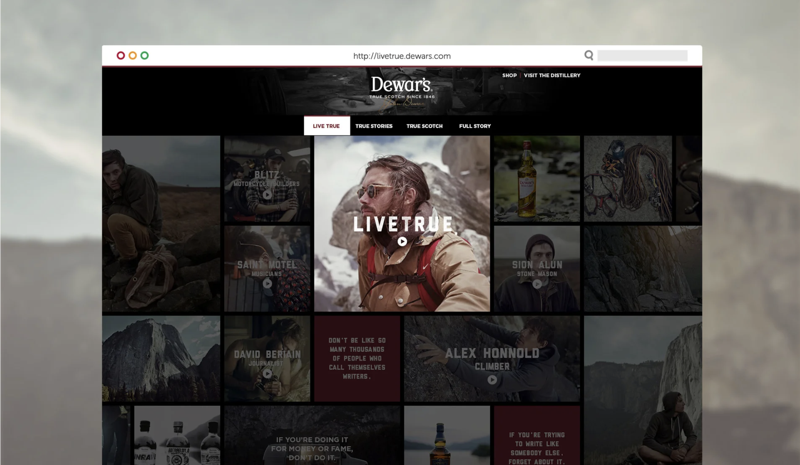
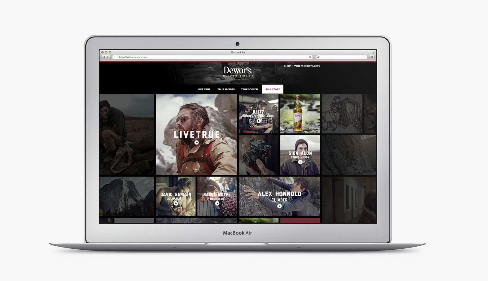
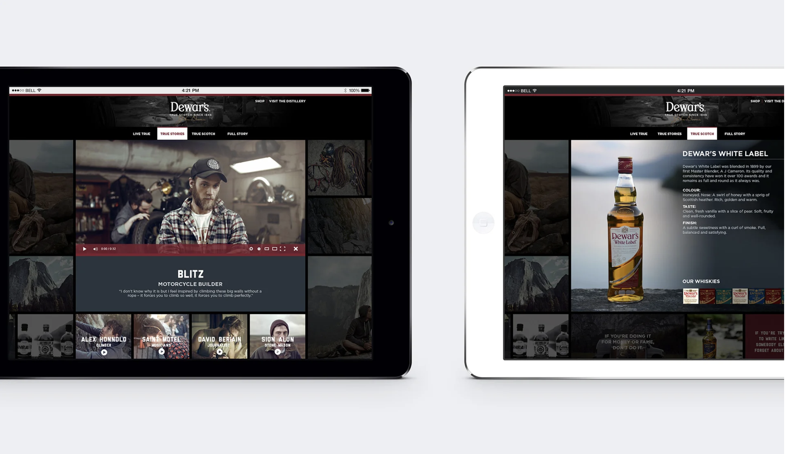

Dewar's Whisky — Live True
Inspired by nearly 170 years of heritage, Live True was designed to speak to those who live by their own convictions and value authenticity above everything. A global campaign backed by print, broadcast, outdoor, digital and social — and a website at the centre of it all.

A 170-year brand, brought to life for a new generation.
Live True was a large-scale global campaign telling the stories of real people whose lives had been shaped by their passions. The campaign spanned print, broadcast, outdoor, digital and social — with the website as the editorial hub that tied it all together.
An isotope grid that let the stories lead.
The site was built around an isotope filter layout — a dynamic grid of video, photography, and social content that users could filter by theme. The design foregrounded the human stories rather than the product, letting Dewar's heritage speak through the people who embodied it.


Global scale, local stories.
The challenge was designing a system flexible enough to hold content from dozens of contributors across different markets, while keeping the editorial feel consistent. Typography, colour, and layout worked together to make every story feel equally valued — whether it was a film, a photograph, or a social post.


"Authenticity at scale — a design system that let real stories lead."